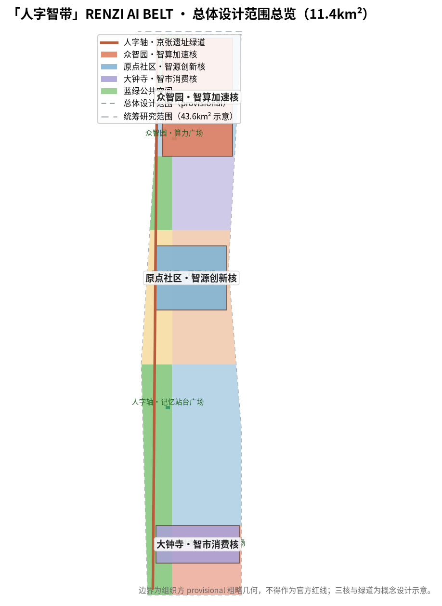
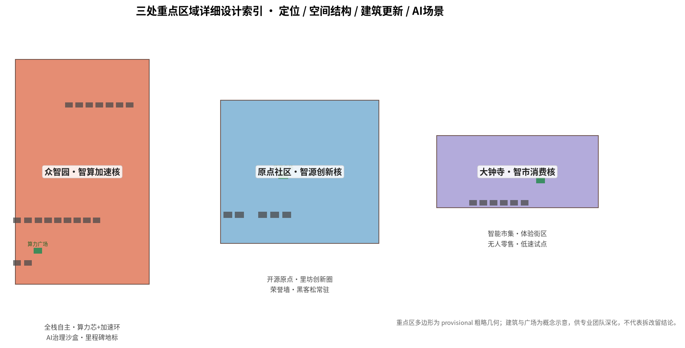
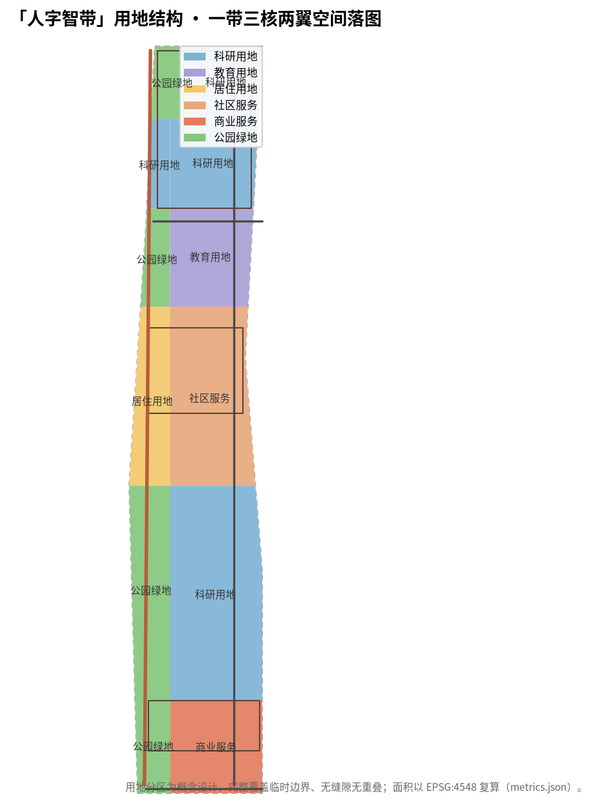
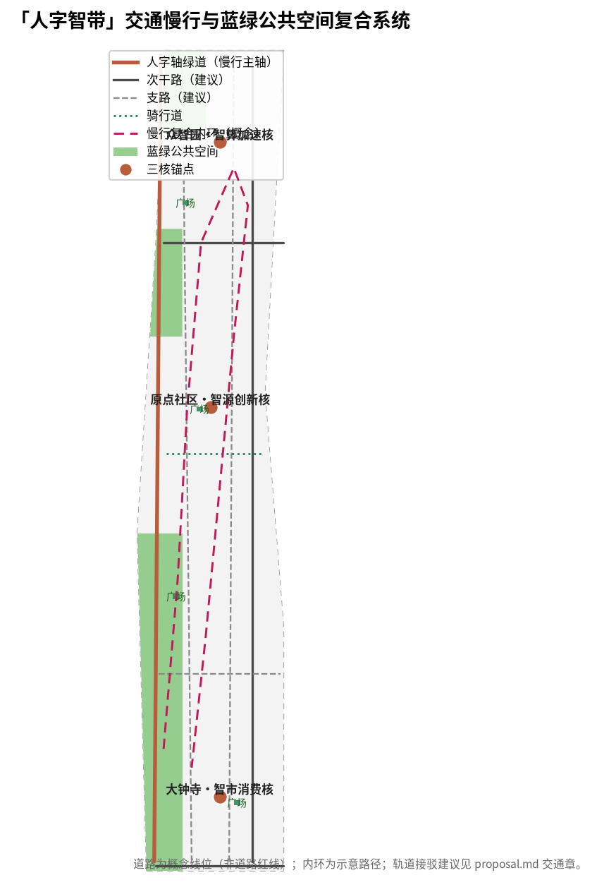

总体设计范围总览：人字轴绿道、三核锚点、蓝绿公共空间与统筹研究范围示意。边界为 provisional 粗略几何。
指标均由 geometry/*.geojson 以 EPSG:4548 复算（metrics.json），official 边界发布后全量重算。
| 层级 | 面积 | 工作目标 | 设计深度 |
|---|---|---|---|
| 统筹研究范围 | 43.6 km² | AI产业生态、三区两翼协同、未来城市形态 | 战略/产业研究 |
| 总体设计范围 | 11.4 km² | 城市更新总体框架、产业空间、交通市政、风貌 | 控规深度城市设计 |
| 重点区域范围 | 368.4 ha | 三处重点片区精细化设计 | 规划综合实施方案深度 |
三层范围逐级落实：产业战略 → 总体城市设计 → 重点片区详细设计。
约 192.1 ha。AI全栈自主创新体系与AI治理话语权主承载区，算力芯+加速环结构，AI治理沙盒与人工智能里程碑地标。
约 104.3 ha。世界级AI创新生态策源地，开源广场+里坊创新圈，智能体贡献荣誉墙与开源成果展示廊。
约 72.0 ha。智能原生新业态与AI生活体验消费主场，智能市集+体验街区，低速机器人试点场景。

三处重点区域详细设计索引（定位/空间结构/建筑更新/AI场景）。

| 代码 | 用途 | 面积 | 占比 |
|---|---|---|---|
| 0802 | 科研用地 | 4.44 km² | 38.9% |
| 0702 | 社区服务设施 | 1.85 km² | 16.2% |
| 1401 | 公园绿地 | 2.17 km² | 19.0% |
| 05 | 商业服务业 | 1.11 km² | 9.7% |
| 0804 | 教育用地 | 1.03 km² | 9.0% |
| 0701 | 居住用地 | 0.82 km² | 7.2% |
用地分区完整覆盖临时边界、无缝隙无重叠（拓扑校验通过）。

| 类别 | 说明 |
|---|---|
| 人字轴绿道 | 南北贯通慢行主轴，缝合东西、贯通南北 |
| 次干路 ×2 | 东侧次干路、南/北侧次干路（概念线位） |
| 支路 ×3 | 人字西/东支路、大钟寺横向支路 |
| 骑行道 ×1 | 原点社区骑行道 |
| 轨道接驳 | 以现有轨道站点为锚的 transit_connection 建议 |
道路为概念线位（非道路红线），道路网长度 0 m（metric:road_network_length_m）。
人字轴绿道串联北楔绿带、南楔绿带与社区绿网（green_space 4处，约 2.17 km²）；4处广场节点：算力广场、开源广场、智能市集广场、记忆站台广场。绿地率 19.0%，支撑人才生活与蓝绿韧性。
concept 建筑基底 44 栋（AI研发/教育/居住/社区服务/混合功能），建筑基底总面积与密度见 metrics.json（building_footprint_area_sqm、building_density）。建筑总量/容积率/限高：官方控规条件缺失，标记 unknown，待审批条件复算。
| 项目 | 类型 | 分期 |
|---|---|---|
| 人字轴绿道贯通工程 | 公共空间 | 近期 |
| 算力广场与里程碑装置 | 公共空间/地标 | 近期 |
| 开源广场与荣誉墙 | 公共空间/地标 | 近期 |
| 老旧园区功能复合改造 | 城市更新 | 中期 |
| 社区服务设施补短板 | 公共服务 | 中期 |
| 智能市集街区改造 | 城市更新 | 中期 |
| 端侧算力与感知网络节点 | 新型基础设施 | 中期 |
| 双环慢行与蓝绿织补 | 蓝绿空间 | 远期 |
| 沿街界面与风貌整治 | 城市风貌 | 远期 |
分期面积：近期 2.26 km² / 中期 4.03 km² / 远期 5.12 km²（geometry/phasing.geojson）。
| 编号 | 场景 | 空间落点 | 级别 |
|---|---|---|---|
| SC-01 | AI+医疗影像辅助诊断展示 | 学院路医疗带 | 展示级 |
| SC-02 | AI+个性化教育实验室 | 原点社区教育带 | 展示级 |
| SC-03 | AI+智能市集（无人零售/导购） | 大钟寺市集 | 商业级 |
| SC-04 | AI+自动驾驶低速接驳（测试验证） | 人字轴北段/小月河翼 | 测试级 |
| SC-05 | AI+城市体检与公共空间运维 | 全带公共空间 | 测试级 |
| SC-06 | AI+文化导览（人字轴数字导览） | 遗址公园人字轴 | 展示级 |
| SC-07 | AI+法律合规助手（开放咨询） | 中关村智服翼 | 商业级 |
| SC-08 | AI+开发者协作空间（开源社区） | 原点社区开源广场 | 社区级 |
| SC-09 | AI+端侧算力与隐私计算测试床（测试验证） | 众智园 | 测试级 |
| SC-10 | AI+城市治理沙盒（测试验证） | 众智园/原点社区 | 测试级 |
≥10张场景卡；SC-04/SC-09/SC-10 为产业测试验证场景（低速、可监管、可人工复核）。5类用户画像：研究者/开发者、创业团队、企业工程师、居民家庭、访客游客。
| 任务 | 要求 | 本方案回应 |
|---|---|---|
| agent.1 | 一带总体概念与功能统筹方案设计 | 人字智带命名/Logo、三大定位、五大功能、三区两翼协同回路 |
| agent.2 | AI全栈自主创新体系与世界级AI创新生态设计 | 5-8个全球案例、生态图谱、众智园全栈体系、中关村翼支撑 |
| agent.3 | AI+场景赋能新范式与智能化AI活力城市设计 | 10张场景卡、3个测试验证场景、5类用户画像 |
| agent.4 | AI公共空间、智能原生新业态与朝圣地标设计 | 人字轴公共空间、3个AI朝圣地标、荣誉展示体系 |
| agent.5 | 百年京张文化、中关村文化与AI新文化融合叙事 | 人字形文化母题、导视符号系统、国际传播叙事 |
| agent.6 | 一带全球AI创新活动体系与长期运营设计 | 年度活动体系、开发者社区运营、招引转化路径 |
compliance_matrix.json 共 23 项（公告1.3/1.4/1.5 + agent.1–agent.6）逐项映射。
self_check_submission.py 确定性校验、空间复核、可视化封装检查与专业证据复核结果写入 self_check.json（本页随提交包同步更新）。proposal.md 为唯一人可读主体方案，report/proposal.html 为离线阅读版，drawings/a3-booklet.pdf 与 a0-boards.pdf 为展示件，均不替代 GeoJSON/metrics 的权威数据。
| ID | 用途 |
|---|---|
| OFFICIAL-ANNOUNCEMENT | 资格预审公告（正式依据） |
| AGENT-TASKBOOK | 面向智能体任务书（正式依据） |
| SITE-PACKAGE / SOURCE-REGISTRY | 站点包与公开来源注册表 |
| BOUNDARY-SOURCE / KEY-AREA-SOURCE | provisional 临时几何（仅生成/展示/自检） |
| PROCESSED-FACT-PACK | 阅读导航层（非权威来源） |
全部资料来自公开或清权来源，无秘密地图、非公开表格与伪造背书。
A-CONTROLS-001：法定控规条件（容积率、限高、密度、绿地率、退线）、道路红线、权属、市政与工程约束需官方附件确认；本包仅就提供的边界与设计图层可作正式 AI 投稿评审，法定控制需专业确认。所有空间建议为概念建议/参考方案，不替代正式规划、不构成政府审定结论。